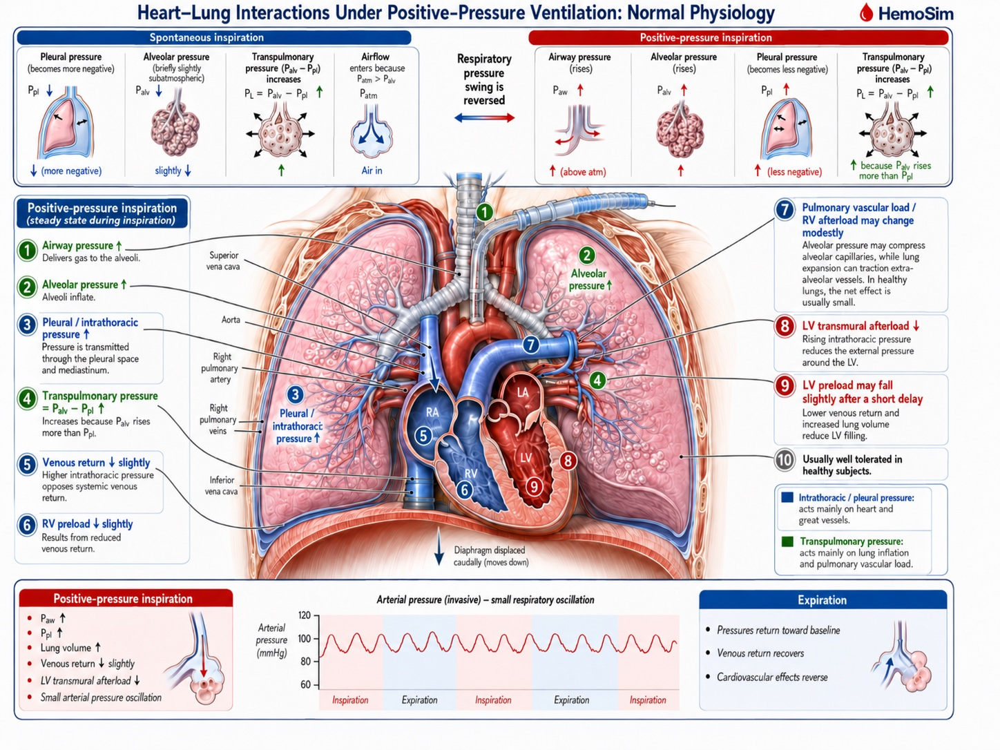
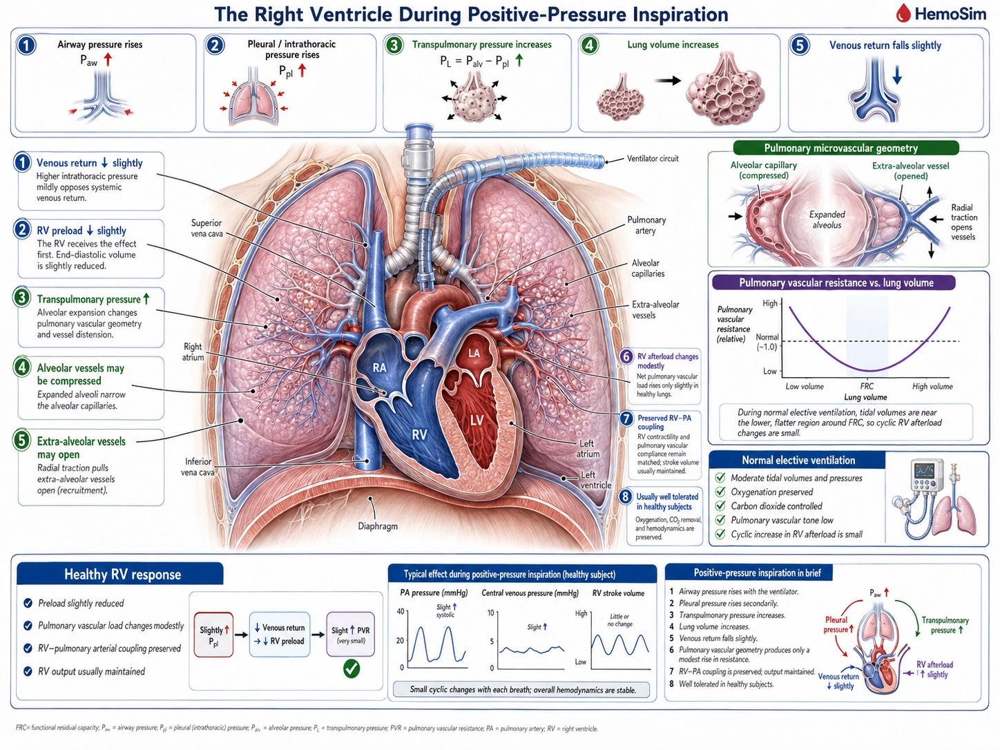
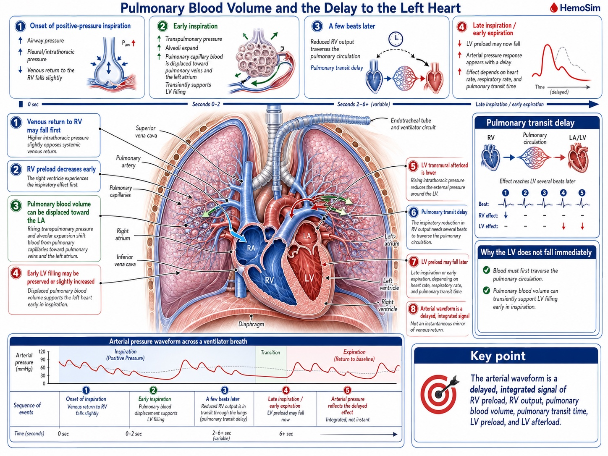
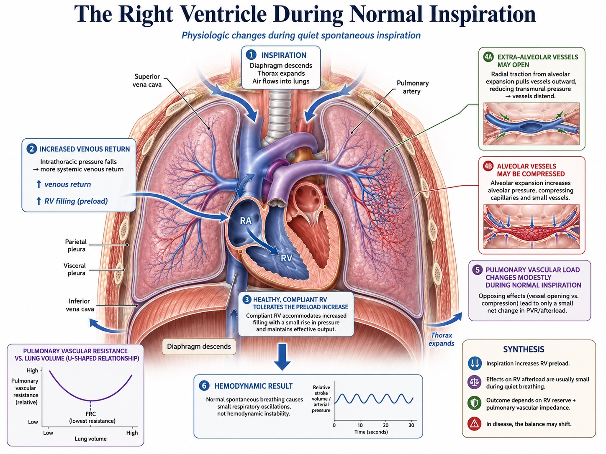

Module I12
Heart-lung interactions in arterial pressure monitoring
Module I3 ended on transmural pressure: what distends a chamber is the pressure inside it minus the pressure in the space around it, and the monitor can report only the first of those two terms. There it was a reference problem, something that corrupts a filling pressure you are trying to read at a single instant. This module takes the same quantity and lets it move. Every breath changes the pressure surrounding the heart and the great vessels, ten to thirty times a minute, in a direction that depends on whether the patient or the ventilator is doing the work. The pressure inside the chambers does not follow it exactly, and the gap between the two is what produces the respiratory swing visible on any arterial line.
That swing is the subject of this module and the next. Here it is treated purely as a mechanism: what a positive pressure breath does to each ventricle, in what order, and why the effect on the left arrives several beats after the effect on the right. Module I13 turns the same physiology into a measurement, with the components of systolic pressure variation, the provenance of the pulse pressure variation threshold, and the full catalogue of conditions under which the number stops meaning what it appears to mean. The division of labour is deliberate rather than editorial. Almost everything that invalidates those measurements does so through transmural pressure, so a clinician who holds the list without the mechanism can recite six preconditions and still be unable to judge the seventh case, which is the one the list does not cover.
Two parts of the account are already written and are not repeated. Module I8 covers the venous limb in depth: the vascular waterfall at the thoraco-abdominal junction, the evidence that positive end-expiratory pressure moves that waterfall rather than simply consuming the pressure gradient, and the reflex rise in mean systemic filling pressure that normally protects the gradient. This module treats the venous effect as one mechanism among five and refers back rather than rebuilding it. Module I11 introduces pulse pressure variation as one instrument among several a clinician might reach for. What follows is the physiology underneath both.
Heart-lung interaction is not an additional interface layered on top of the circulation. A breath perturbs several of the existing interfaces simultaneously. Through Interface III it changes the pressure environment of the great veins, right atrium and venous return. Through Interface IV it changes right ventricular filling, pulmonary vascular load, and ultimately left ventricular filling after pulmonary transit. Through Interface I it changes left ventricular transmural afterload. The arterial waveform is the downstream record of those simultaneous perturbations, separated in time by the pulmonary circulation.
Two pressures, one breath
A breath generates two pressure changes, and confusing them is the single commonest error in this territory. Transpulmonary pressure, alveolar pressure minus pleural pressure, is what distends the lung. It is the pressure the parenchyma feels and the pressure that governs ventilator-induced lung injury. Pleural pressure, which in this context is used interchangeably with intrathoracic pressure, is what the heart feels. It surrounds the right atrium, both ventricles, the intrathoracic segments of both venae cavae, the pulmonary vessels and the intrathoracic aorta. Jozwiak and Teboul make the separation the organising point of their review of heart-lung interactions, and it is worth adopting, because the two pressures can move in opposite directions and a ventilator setting that is safe for the lung is not automatically safe for the circulation.
The practical consequence is that an airway pressure is not a pleural pressure. The number displayed on the ventilator is measured at the airway opening, and only a fraction of it reaches the pleural space. That fraction is not a constant of nature and not a rule of thumb. It is set by how the total stiffness of the respiratory system divides between the lung and the chest wall.
Read the ratio at its two extremes and the bedside behaviour follows. A patient with very stiff lungs and a normal chest wall, which describes much of the acute respiratory distress syndrome, has a large Ers of which the lung supplies most, so Ecw ÷ Ers is small and an alarming plateau pressure produces a modest pleural swing. A patient with a stiff chest wall, from obesity, chest wall oedema, burn eschar or a tense abdomen, has a large Ecw as a share of the total, so a comparatively gentle airway pressure produces a large pleural swing. Module I3 gives the measured version of this in Teboul's index of transmission, derived patient by patient from the respiratory variation in an occlusion pressure. The point to carry forward is that two patients ventilated with identical settings can present the circulation with entirely different provocations, and nothing on the ventilator screen distinguishes them.
Once the pleural swing has been established, the structure that responds most directly is the left ventricle, because its afterload is a transmural quantity by definition. What the myocardium develops tension against is not the pressure in the aorta as referenced to the room. It is the pressure it must raise inside the cavity above the pressure pressing on the outside of its own wall.
![Two panels. Left panel, spontaneous inspiration: a thorax outline with outward arrows showing pleural pressure of minus 8 mmHg, containing a left ventricle labelled 120 mmHg inside the chamber, with the arithmetic transmural pressure equals 120 minus negative 8 equals 128 mmHg, wall stress higher than the display, afterload rises. Right panel, positive pressure inspiration: the same thorax with inward arrows showing pleural pressure of plus 8 mmHg, the same left ventricle at 120 mmHg inside the chamber, with the arithmetic transmural pressure equals 120 minus plus 8 equals 112 mmHg, wall stress lower than the display, afterload falls. A footer states that the monitor reads 120 mmHg in both panels and the ventricle does not.](img/i12-transmural-afterload.svg)
This is not an inference from first principles. Buda and colleagues measured it directly in eight patients, using implanted intramyocardial markers to track fibre shortening velocity and left ventricular volume beat by beat through Valsalva and Mueller manoeuvres. During the Mueller manoeuvre, which is a forced inspiratory effort against a closed airway and therefore a large sustained fall in pleural pressure, fibre shortening velocity and ejection fraction both fell despite a rising left ventricular volume and a falling arterial pressure. The instructive result is the second one: when arterial pressure was corrected for the simultaneous change in intrapleural pressure, it correlated better with left ventricular end-systolic volume than the uncorrected pressure did. The corrected value, which is to say the transmural value, is the one the ventricle was actually responding to.
The five mechanisms of a positive pressure breath
Michard's 2005 review in Anesthesiology sets out the effects of a mechanical breath as a numbered chain, and the numbering is worth keeping because the five effects act on different structures, in a definite order, and with opposite consequences for the two ventricles. Take a passive patient, fully sedated or paralysed, on controlled ventilation. The chain below describes one inspiration. Expiration reverses every step, which is why the argument only has to be made once.

![Schematic of the thorax drawn as a rectangle. Outside and below it, the inferior vena cava enters at position 1, where an arrow labelled Ppl indicates pleural pressure acting on the vessel. Inside the thorax, the right atrium and right ventricle are marked with position 2 and a further Ppl arrow. A central box represents the pulmonary vascular bed, with an alveolus at the top labelled Palv pressing down on a region marked Zone I to II at position 3, and a second alveolus lower down pressing on a region marked Zone III, from which an arrow at position 4 runs toward the left atrium. The left atrium and left ventricle sit on the right, with position 5 and a Ppl arrow pressing on the left ventricular free wall.](img/hemodynamics-module-v2022-full_slide153_4285dfa0.png)
The right ventricle: mechanisms 1, 2 and 3
Mechanism 1. The resistance to venous return rises. The intrathoracic great veins are thin-walled collapsible tubes with almost no intrinsic wall tone, so their patency is a transmural question rather than a pressure question. Raising the pressure around them narrows them, and where the pressure around them rises above the pressure inside, they close. Module I8 works this through as the vascular waterfall and shows that a positive end-expiratory pressure of 10 cmH2O moves the critical downstream pressure for maximal venous return from around zero to a clearly positive value in both cavae. What matters here is only the direction: inspiration makes the venous pathway a worse conduit while the breath lasts.
Mechanism 2. Right atrial pressure rises and the gradient for return narrows. The right atrium sits inside the pressurised compartment, so its intracavitary pressure rises with the pleural pressure around it. The v2022 deck makes an additional point here that is easy to skate past: the rise is not only a passive transmission, because the raised surrounding pressure also reduces the effective compliance of the atrium, so the same returning volume now generates a higher intracavitary pressure. Venous return depends on mean systemic filling pressure minus right atrial pressure, so the gradient narrows if mean systemic filling pressure does not rise proportionally. Note that mechanisms 1 and 2 reduce inflow by two different routes, one through the resistance term and one through the pressure term, and that a bedside measurement cannot separate them.
Mechanism 3. Right ventricular afterload rises. As the alveoli distend, the capillaries and small vessels running in the alveolar septa are compressed between them. Pulmonary vascular resistance has a U-shaped relationship with lung volume, minimal near functional residual capacity and rising at both extremes, because alveolar vessels are squeezed as lung volume rises while extra-alveolar vessels are pulled open by radial traction and narrow as lung volume falls. A tidal breath from a normal resting volume moves the lung up the rising limb of that curve, so inspiration is a cyclic increase in the impedance the right ventricle ejects into.
All three mechanisms tend to reduce right ventricular stroke volume during positive-pressure inspiration, either through reduced filling or increased impedance to ejection, although their relative contributions vary from patient to patient.

The left ventricle: mechanisms 4 and 5
Mechanism 4. Left ventricular preload rises. The same alveolar distension that compresses the pulmonary microvasculature has to send its contents somewhere, and the pulmonary capillary and venular bed drains forward into the left atrium. Inspiration therefore wrings a bolus of blood out of the lung and into the left heart. This is a real, if transient, increase in left ventricular filling, and it is the mechanism most often left out of the informal version of this story.
Mechanism 5. Left ventricular afterload falls. The pleural pressure that is pressing inward on the great veins is also pressing inward on the left ventricular free wall and on the intrathoracic aorta. The transmural systolic pressure the ventricle must generate is its cavity pressure minus that surrounding pressure, so raising the surrounding pressure lowers the wall tension required to open the aortic valve and sustain ejection. The figure above gives the arithmetic. Positive pressure inspiration unloads the left ventricle.
These two also combine, and in the same direction: left ventricular stroke volume rises during a positive pressure inspiration, from better filling and easier ejection at once.
| Mechanism | Where it acts | What a positive pressure inspiration does | Effect on stroke volume |
|---|---|---|---|
| 1 | Intrathoracic great veins | Raises the resistance to venous return, up to frank flow limitation | RV falls |
| 2 | Right atrium | Raises RAP and lowers atrial compliance, potentially narrowing the gradient for return | RV falls |
| 3 | Alveolar vessels | Compresses them as lung volume rises, raising RV outflow impedance | RV falls |
| 4 | Pulmonary capillary and venular bed | Displaces stored blood forward into the left atrium | LV rises |
| 5 | LV free wall and intrathoracic aorta | Lowers LV transmural systolic pressure, and therefore afterload | LV rises |
These pressure and volume changes do not occur in mechanically isolated ventricles. The RV and LV share the septum and pericardial space, so even normal positive-pressure ventilation produces small reciprocal geometric effects, usually buffered by normal chamber and pericardial reserve.
Which of the five actually dominates
Listing five mechanisms invites the assumption that they contribute roughly equally. They do not, and the studies that separated them are worth knowing because they overturn the order most clinicians would guess.
On the right side, the intuitive account puts preload first. Vieillard-Baron and colleagues tested it directly, combining two-dimensional echocardiography, Doppler and continuous airway pressure recording in ten patients ventilated in controlled mode for acute respiratory failure, which allowed each cardiac event to be timed against the respiratory cycle. Lung inflation dropped the pulmonary artery velocity-time integral from 14.3 (S.D. +/- 2.6 cm) at end expiration to 11.3 (S.D. +/- 2.1 cm) at end inspiration. Two features of how it fell settle the mechanism. The fall occurred without any reduction in right atrial diameter or right ventricular diastolic dimensions, so the ventricle was not underfilled. And the fall in tricuspid inflow did not precede the fall in pulmonary artery outflow, it followed it, which is the signature of an ejection problem rather than a filling problem. Manipulating tidal volume without changing airway pressure, and airway pressure without changing tidal volume, showed that tidal volume rather than airway pressure was the main determinant of right ventricular afterloading. In that population, mechanism 3 was the dominant one. This observation is particularly plausible in acute lung injury and ARDS, where reduced lung compliance can limit transmission of airway pressure to the pleural space, so a large rise in airway pressure need not translate into an equally large rise in the pressure surrounding the great intrathoracic veins.
The venous mechanisms are not thereby dismissed, but they behave less simply than the textbook version suggests. Jellinek and colleagues varied airway pressure from 0 to 15 cmH2O under apnoea in ten anaesthetised patients undergoing defibrillator implantation, which gave them the rare opportunity to measure mean systemic filling pressure directly during the induced episodes of ventricular fibrillation. Right atrial pressure rose from 7.3 (S.D. +/- 3.1) to 10.0 (S.D. +/- 2.3 mmHg) and left ventricular stroke volume fell by 23 (S.D. +/- 22 percent). Mean systemic filling pressure, however, rose in parallel, from 10.2 (S.D. +/- 3.5) to 12.7 (S.D. +/- 3.2 mmHg), so the pressure gradient for venous return was unchanged. Echocardiography found no caval collapse. Positive airway pressure had reduced venous return without reducing the gradient, which is the human counterpart of the canine result set out in Module I8 and points at the resistance term rather than the pressure term.
Vieillard-Baron and colleagues subsequently provided a direct anatomical demonstration of how that resistance can rise. In 22 mechanically ventilated patients requiring hemodynamic monitoring, they measured superior vena caval diameter beat by beat together with right ventricular outflow. Fifteen patients showed little inspiratory SVC collapse, with a collapsibility index of 17 (S.D. +/- 7 percent) and only a moderate inspiratory fall in RV stroke output of 25 (S.D. +/- 17 percent). In seven others, however, inspiration produced marked partial collapse of the intrathoracic SVC, with a collapsibility index of 71 (S.D. +/- 7 percent), accompanied by a 69 (S.D. +/- 14 percent) fall in RV stroke output and shortening of pulmonary artery flow time. The authors interpreted this as a thoracic vena cava entering a zone 2 condition: as pleural pressure rises, external pressure approaches or exceeds the vessel's effective opening pressure, the cava partially collapses, venous conductance falls and resistance to venous return rises. Rapid volume expansion largely abolished both phenomena, reducing SVC collapsibility to 15 (S.D. +/- 12 percent) and the inspiratory fall in RV output to about 31 percent. The pressure gradient need not disappear for venous return to fall. The conduit itself can become a resistor.
How much any of this costs a given patient depends on where that patient started. In a second study from the same Jellinek group, with Pinsky, airway pressure was raised in steps to 10, 20 and 30 cmH2O using fifteen second inspiratory holds in twenty-two ventilator-dependent patients with acute lung injury. The change in cardiac index at the highest pressure ranged from plus 6 percent to minus 43 percent across individuals. Baseline right atrial pressure predicted it better than pulmonary artery occlusion pressure or right ventricular end-diastolic volume index, and the split was clean: patients starting with a right atrial pressure of 10 mmHg or less lost 30 (S.D. +/- 9 percent) of their cardiac index at 30 cmH2O, while those starting above 10 mmHg lost 8 (S.D. +/- 7 percent). The same breath is a trivial perturbation in one patient and a haemodynamic insult in the next, and the variable that separates them is filling, not the ventilator setting.
That dependence on starting condition is the broader rule. The five mechanisms occur during every controlled positive-pressure breath. What separates a trivial oscillation from haemodynamic instability is the reserve available to buffer them. Adequate stressed volume and venous tone preserve venous return, a healthy right ventricle tolerates the transient change in pulmonary load, the pulmonary vascular bed accommodates changes in flow and lung volume, the left ventricle tolerates small changes in filling and afterload, and the pericardium and septum permit modest reciprocal changes in chamber volume. Disease does not create a new heart-lung interaction. It removes one or more of the reserves that normally make the interaction clinically silent.
The phase delay between the two ventricles

Everything above concerns one inspiration acting on two ventricles in opposite directions. The reason the pattern is legible at the bedside, rather than cancelling into noise, is that the two effects do not arrive at the aorta at the same time.
![Three simultaneous flow recordings stacked vertically on grid paper. The bottom trace is vena cava flow, marked with an arrow labelled 1 at the point where flow drops sharply at the onset of positive pressure inspiration. The middle trace is pulmonary artery flow, marked with an arrow labelled 2 at a peak that occurs before inspiration and falls during it. The top trace is aortic flow, marked with an arrow labelled 3 at a peak of increased amplitude occurring during inspiration. Vertical arrows at the bottom mark the onset of two successive positive pressure inspirations, with dashed lines indicating their duration.](img/hemodynamics-module-v2022-full_slide154_68dd6535.png)
The separation is the pulmonary transit time. Blood whose delivery to the right ventricle was reduced at the start of a breath has to cross the pulmonary circulation before the left ventricle can be short of it, and the crossing takes on the order of two to four cardiac cycles. So the inspiratory maximum in aortic flow is produced by mechanisms 4 and 5, acting on the left ventricle in real time, while the inspiratory reduction in right ventricular output shows up as a minimum in aortic flow two to four beats later, typically during expiration.
Whether that delay produces a clean, readable pattern or an unreadable smear depends on how many beats fit inside a respiratory cycle, which is a piece of arithmetic worth doing explicitly rather than absorbing as a rule.
At a heart rate of 90 and a respiratory rate of 15 there are six beats per breath, and a three-beat delay occupies half the respiratory cycle. The right-sided minimum therefore lands cleanly in expiration, half a cycle away from the left-sided maximum, and the arterial trace shows a large, well-separated swing. Now raise the respiratory rate to 30 and drop the heart rate to 60. There are two beats per breath, and the same three-beat delay is longer than the whole respiratory cycle. The right-sided consequence of one breath now arrives during the next breath, superimposed on that breath's left-sided consequence, and the two partially cancel. The variation has not stopped existing. It has stopped being resolvable, which is a different problem and one with a different remedy.
![Two aligned beat-by-beat stroke volume traces on a common time axis with a one second scale bar. The upper green trace is right ventricular stroke volume in millilitres, the lower blue trace is left ventricular stroke volume in millilitres. A bracketed segment on the left is labelled spontaneous ventilation and a bracketed segment on the right is labelled positive pressure ventilation. Within each segment the two traces show cyclic changes in amplitude that are offset from each other in time rather than coinciding.](img/hemodynamics-module-v2022-full_slide169_7f714482.png)
The phase delay also resolves an apparent contradiction that the v2022 deck raises directly and that catches most learners who arrive here from the venous return and cardiac function curves of Module N4 and Module N5. Those curves predict that raising right atrial pressure lowers flow, so a positive pressure breath should lower cardiac output, and yet the aortic trace clearly rises during inspiration. The resolution is that the two-curve diagram is a one-ventricle model. It is accurate for right ventricular flow and it is simply out of phase for left ventricular flow. Slow the respiratory rate far enough that the transit delay becomes a negligible fraction of a very long respiratory cycle and both ventricles do fall together during inspiration, exactly as the curves predict. At ordinary respiratory rates the model has not failed, it has been read at the wrong point in the cycle.
The larger conclusion is one to hold on to whenever an arterial trace is being interpreted. The waveform is not a live readout of venous return. It is a delayed, filtered and integrated report on right ventricular preload, right ventricular afterload, pulmonary blood volume, transit time, left ventricular preload and left ventricular afterload, several of which are moving in opposite directions at any given instant.
How a cyclic change in flow becomes a visible change in pressure
Everything measured in the studies above is a flow. What is available at the bedside is a pressure. The step between them is short but it is not free, and it is the reason arterial pressure variation works at all.
Over a single respiratory cycle, arterial resistance and arterial compliance change very little. Module I4 treats the arterial system as a Windkessel, in which the pressure generated by a given ejection depends on the volume ejected, the compliance of the reservoir receiving it and the rate at which the reservoir drains. Hold the last two approximately constant across a few seconds and pulse pressure becomes a proportional reporter of stroke volume. That is the whole justification for reading a flow phenomenon off a pressure trace, and it is also the source of the caveats, because anything that changes arterial compliance or resistance within the respiratory cycle breaks the proportionality.
Michard's own framing of the endpoint is worth quoting for its precision. Arterial pressure variation, he concluded from the studies available by 2005, is neither an indicator of blood volume nor a marker of cardiac preload. It is a predictor of fluid responsiveness. Those are three different claims, and the difference between them is the reason Module I11 insists that fluid responsiveness is a prediction rather than a diagnosis.
There is a mundane obstacle before any of this reaches the eye. The respiratory swing is a slow modulation of a fast signal, and the standard arterial display is configured to show the fast signal.

The spontaneously breathing patient reverses every sign
Nothing in the five mechanisms is specific to a ventilator. They describe what happens when pressures around and across thoracic structures change, and spontaneous inspiration reverses the sign of the pleural-pressure swing. Most of the pressure-mediated effects therefore reverse, although the pulmonary vascular response does not simply invert because lung volume and transpulmonary pressure still change during spontaneous inspiration.

Inspiratory descent of the diaphragm makes pleural pressure more negative. Right atrial pressure falls with it, which widens the gradient for venous return, and at the same time diaphragmatic descent raises abdominal pressure and can recruit blood from the splanchnic reservoir toward the thorax. Both effects favour filling, so spontaneous inspiration increases venous return, which is the exact opposite of mechanism 2. The increase is not unlimited, because the collapsible segment at the thoraco-abdominal junction imposes a ceiling once the pressure inside the vessel falls to the pressure around it, and Module I8 makes the point that a very large inspiratory effort therefore buys no additional venous return while continuing to load the left ventricle. Mechanism 3 is less simply reversed: increasingly negative pleural pressure distends extra-alveolar vessels, while the simultaneous increase in lung volume can still compress alveolar vessels, so the net change in pulmonary vascular load depends on where the lung begins and how far it expands.
On the left side the reversal is cleanest and most consequential. A negative pleural pressure lowers the pressure outside the left ventricle while the pressure it must generate inside remains whatever the systemic circulation demands, so the transmural systolic pressure rises. Spontaneous inspiration increases left ventricular afterload. That is the left panel of the figure earlier in this module and the finding Buda and colleagues measured with the Mueller manoeuvre. Combined with the fact that pulmonary blood is no longer being wrung forward into the left atrium, left ventricular stroke volume falls during spontaneous inspiration rather than rising.
The ventricles also remain mechanically linked throughout this cycle. They share the interventricular septum and occupy the same pericardial space, so a respiratory change in one chamber can influence the filling geometry of the other. During quiet spontaneous inspiration, the increase in right ventricular filling may produce a small leftward septal displacement while the pulmonary circulation temporarily stores part of the additional right-sided volume. In a normal, compliant pericardial space these changes are small and well tolerated. Ventricular interdependence is therefore present during normal breathing. Tamponade, acute RV dilatation and severe hyperinflation make the same interaction large enough to become pathological.
![Two stacked panels sharing a common time axis, each showing a shaded inspiration band on the left and an unshaded expiration region on the right. The upper panel is labelled passive positive pressure ventilation and shows a green pleural pressure trace that rises during inspiration, above an arterial pressure trace whose pulse pressure is largest early in inspiration, marked PP max, and smallest during expiration, marked PP min, with an arrow between the two marks labelled phase delay, roughly two to four beats. The lower panel is labelled spontaneous breathing and shows a blue pleural pressure trace that falls during inspiration, above an arterial pressure trace whose pulse pressure is smallest during inspiration, marked PP min, and largest during expiration, marked PP max.](img/i12-swing-direction.svg)
The reversal has been recognised for a long time and has an awkward name attached to it. Massumi and colleagues described the inspiratory rise in systolic pressure seen under positive pressure ventilation as reversed pulsus paradoxus, coining the term against the spontaneous pattern as the reference. The naming is a historical artefact of arterial waveforms having been described in spontaneously breathing patients first, and it is a live source of confusion when a trainee meets both terms in the same week. The physiology is not paradoxical in either direction and it is not reversed in either direction. It is one mechanism read under two opposite boundary conditions.
Two consequences follow for practice, and both are mechanistic rather than procedural. The first is that a patient making spontaneous efforts on a ventilator generates a pleural pressure trajectory that no observer controls: the size of the effort varies breath to breath, its timing relative to the machine breath varies, and within a single triggered breath the pleural pressure goes down and then up. The provocation has stopped being standardised, which is why respiratory variation in a triggering patient is not a smaller version of the passive signal but a different signal. The second is that the direction of the therapeutic effect flips with the mode. Positive pressure unloads the left ventricle. Removing it, at extubation or during a spontaneous breathing trial, reloads the left ventricle at the same moment that the work of breathing returns and venous return increases. That combination is the physiology behind weaning-induced cardiac failure, and it is a prediction the five mechanisms make rather than an unrelated clinical fact.
Pulsus paradoxus, and why the same sign has two mechanisms
Everything so far describes the normal case, in which the respiratory swing is present, small and physiologic. Pulsus paradoxus is the pathological extreme of the same phenomenon, and it is worth working through because it is the situation in which the mechanism is most obviously doing the clinical work.
Hamzaoui, Monnet and Teboul state the baseline plainly in their review: systolic pressure normally falls during quiet inspiration in normal individuals, and pulsus paradoxus is conventionally defined as an inspiratory fall of more than 10 mmHg. That is a definition of a bedside sign in a spontaneously breathing patient, and it should not be confused with the thresholds used for the quantitative indices in Module I13, which are derived differently, applied to passively ventilated patients and answer a different question. Two components contribute to the sign: a genuine inspiratory fall in left ventricular stroke volume, and the passive transmission of the inspiratory fall in intrathoracic pressure to the intrathoracic aorta, which lowers the pressure the transducer sees without any change in flow. Both are transmural arguments.
The sign appears in cardiac tamponade and in conditions where the intrathoracic pressure swings are exaggerated or the right ventricle is distended, principally severe acute asthma and exacerbations of chronic obstructive disease. Grouping them under one sign is convenient and it hides the fact that the underlying ventricular behaviour is not the same.
Tamponade: the ventricles compete for a fixed volume
A tense pericardium converts the two ventricles into a single chamber of fixed total volume. Petit and Vieillard-Baron's review of ventricular interdependence describes the consequence in the terms that make it predictable rather than memorable. Spontaneous inspiration lowers pleural pressure, which is transmitted to the pericardial space and transiently improves the gradient for systemic venous return, so right ventricular filling increases. Inside a fixed, poorly compliant envelope that filling can only be accommodated by displacing the interventricular septum toward the left, which reduces left ventricular diastolic compliance at the moment left ventricular filling is being asked to occur. Left ventricular end-diastolic volume falls, stroke volume falls, and systolic pressure falls with it. Expiration reverses the whole sequence.
The consequence to hold on to is the timing. In tamponade the two ventricles are approximately 180 degrees out of phase: right ventricular stroke volume rises in the same breath phase in which left ventricular stroke volume falls. Shabetai and colleagues characterised the phenomenon experimentally in the 1960s, and the mechanism they identified has survived. The left ventricle in tamponade is not weak. It is a normal ventricle that cannot fill because a neighbouring chamber has taken its space.
Severe asthma: both ventricles fall together
Severe airflow obstruction produces the sign through a different route, and Rebuck and Pengelly reported its development in the presence of airways obstruction in 1973, in patients with no pericardial disease at all. The pericardium is normal, so the ventricles are not competing for a fixed volume. What is abnormal is the pressure environment. Expiratory flow limitation leaves gas trapped, end-expiratory lung volume rises, and the patient must generate a threshold negative pressure simply to begin the next inspiration. Caplan and Hamzaoui, reviewing cardio-respiratory interaction in acute asthma, describe the resulting combination: very large negative inspiratory pleural swings, dynamic hyperinflation with intrinsic positive end-expiratory pressure, and a substantially increased work of breathing.
Every one of the five mechanisms is now being driven hard. Inspiration generates a large fall in pleural pressure and an abrupt increase in venous return, which loads a right ventricle whose afterload is already raised by hyperinflation, hypoxic vasoconstriction, hypercapnia and acidosis. The right ventricle dilates rather than ejecting, and the septum shifts leftward. The left ventricle simultaneously faces a markedly raised transmural afterload from the same negative pleural pressure. Filling falls and ejection is harder in the same breath. In the expiratory phase the hyperinflated lung itself becomes a mechanical constraint: Xu and colleagues, using dynamic-ventilation computed tomography in patients with chronic obstructive disease, showed that hyperinflated lungs compress the heart during expiration, which is a direct imaging demonstration of a constraint usually inferred from pressure measurements alone.
| Cardiac tamponade | Severe asthma or COPD exacerbation | |
|---|---|---|
| Where the constraint sits | A fixed pericardial envelope | The hyperinflated lung and the size of the pleural swing |
| Size of the inspiratory pleural swing | May be close to normal | Markedly negative, from threshold loading |
| RV filling during inspiration | Increased | Increased, abruptly |
| RV stroke volume during inspiration | Increased | Reduced, because afterload rises more than filling |
| LV stroke volume during inspiration | Reduced, by septal shift and lost compliance | Reduced, by lower filling and higher transmural afterload |
| Phase relation between the ventricles | Approximately 180 degrees out of phase | Both fall together during inspiration |
| What abolishes the sign | Relieving the pericardial constraint | Relieving the obstruction and the hyperinflation |
The clinical value of separating the two is that the sign then means different things. In tamponade, pulsus paradoxus is a marker of a mechanical constraint and its presence supports a diagnosis that has to be acted on quickly. In severe asthma, it is graded evidence about the severity of the airflow obstruction and the effort being spent overcoming it, so it can be followed serially as a response to treatment. Hamzaoui and colleagues make exactly that distinction, and it survives into practice: the same number carries diagnostic weight in one setting and monitoring weight in the other.
One further use of the distinction is defensive. A large respiratory variation in a patient with severe obstructive disease is often read as evidence of hypovolaemia, on the reasoning that a big swing means preload dependence. The mechanism says otherwise. In that patient the swing is being generated by an enormous pleural pressure excursion acting on a right ventricle with a raised afterload and a hyperinflated lung pressing on both chambers, and it will be large whether or not the circulation would respond to volume. The same reasoning applies to an inferior vena cava that collapses vigorously in a patient with a large inspiratory effort, which Module I8 treats as a transmural pressure finding rather than a volume reading.
What the mechanism licenses, and what it does not
Two boundaries are worth stating explicitly, because the surrounding material is spread across several modules.
The first is the boundary with measurement. This module establishes that a breath modulates stroke volume through five identifiable mechanisms, that the right-sided and left-sided consequences are separated in time by pulmonary transit, and that the modulation appears on an arterial trace because pulse pressure tracks stroke volume over the short run. It does not establish how large a swing has to be before it predicts anything, how systolic pressure variation decomposes against a reference beat, or which clinical circumstances make the resulting number unusable. Those belong to Module I13, which stands on the physiology set out here. Where that module lists a condition that invalidates a measurement, the mechanism it names will be one of the five above or the transmission fraction that determines how much pleural pressure the breath produced in the first place.
The second is the boundary with the pulmonary circulation. The working rule for this curriculum is that a question answerable from an arterial tracing belongs to this module or to I13, while a question requiring reasoning about pressures across the chest wall and through the pulmonary vasculature belongs to the integrating Expert module. Mechanism 3 sits right on that line. It is treated here as far as the statement that lung inflation raises right ventricular outflow impedance and that tidal volume rather than airway pressure is the main determinant of how much. The zone conditions of the pulmonary circulation, the full set of determinants of pulmonary vascular load, and the disease scenarios in which one mechanism overwhelms the others are the subject of the Expert treatment. The right ventricle as a pump, and why it is so much more afterload-sensitive than the left, is Module I9.
What should survive from this module is not the list of five but the habit the list is meant to build. Every time a breath changes something on a haemodynamic monitor, the underlying mechanical perturbation is a change in pressure across a thoracic structure, transmitted differently to the great veins, pulmonary vasculature and ventricles. Those effects are distributed across two ventricles that experience them differently and report them at different times. Reading a respiratory swing is therefore an act of decomposition rather than pattern recognition: which of the five mechanisms is being driven hardest, how much of the airway pressure reached the pleural space to drive it, and how many beats have elapsed since the right ventricle registered the insult. Module I13 turns that decomposition into two numbers and a set of conditions under which they can be trusted, and Module I14 applies the same end-expiratory reasoning to the venous waveform, where the respiratory excursion is not a signal to be measured but an artefact to be read past.
References
- Michard F. Changes in arterial pressure during mechanical ventilation. Anesthesiology. 2005;103(2):419-428. doi:10.1097/00000542-200508000-00026.
- Jardin F, Farcot JC, Gueret P, Prost JF, Ozier Y, Bourdarias JP. Cyclic changes in arterial pulse during respiratory support. Circulation. 1983;68(2):266-274. doi:10.1161/01.cir.68.2.266.
- Vieillard-Baron A, Loubieres Y, Schmitt JM, Page B, Dubourg O, Jardin F. Cyclic changes in right ventricular output impedance during mechanical ventilation. J Appl Physiol (1985). 1999;87(5):1644-1650. doi:10.1152/jappl.1999.87.5.1644.
- Vieillard-Baron A, Chergui K, Augarde R, Prin S, Page B, Beauchet A, Jardin F. Cyclic changes in arterial pulse during respiratory support revisited by Doppler echocardiography. Am J Respir Crit Care Med. 2003;168(6):671-676. doi:10.1164/rccm.200301-135OC.
- Jellinek H, Krenn H, Oczenski W, Veit F, Schwarz S, Fitzgerald RD. Influence of positive airway pressure on the pressure gradient for venous return in humans. J Appl Physiol (1985). 2000;88(3):926-932. doi:10.1152/jappl.2000.88.3.926.
- Vieillard-Baron A, Augarde R, Prin S, Page B, Beauchet A, Jardin F. Influence of superior vena caval zone condition on cyclic changes in right ventricular outflow during respiratory support. Anesthesiology. 2001;95(5):1083-1088. doi:10.1097/00000542-200111000-00010.
- Jellinek H, Krafft P, Fitzgerald RD, Schwarz S, Pinsky MR. Right atrial pressure predicts hemodynamic response to apneic positive airway pressure. Crit Care Med. 2000;28(3):672-678. doi:10.1097/00003246-200003000-00012.
- Pinsky MR, Matuschak GM, Klain M. Determinants of cardiac augmentation by elevations in intrathoracic pressure. J Appl Physiol (1985). 1985;58(4):1189-1198. doi:10.1152/jappl.1985.58.4.1189.
- Buda AJ, Pinsky MR, Ingels NB Jr, Daughters GT 2nd, Stinson EB, Alderman EL. Effect of intrathoracic pressure on left ventricular performance. N Engl J Med. 1979;301(9):453-459. doi:10.1056/NEJM197908303010901.
- Pinsky MR. Cardiopulmonary interactions: physiologic basis and clinical applications. Ann Am Thorac Soc. 2018;15(Suppl 1):S45-S48. doi:10.1513/AnnalsATS.201704-339FR. Free full text.
- Mahmood SS, Pinsky MR. Heart-lung interactions during mechanical ventilation: the basics. Ann Transl Med. 2018;6(18):349. doi:10.21037/atm.2018.04.29. Free full text.
- Magder S. Heart-lung interaction in spontaneous breathing subjects: the basics. Ann Transl Med. 2018;6(18):348. doi:10.21037/atm.2018.06.19. Free full text.
- Jozwiak M, Teboul JL. Heart-lungs interactions: the basics and clinical implications. Ann Intensive Care. 2024;14(1):122. doi:10.1186/s13613-024-01356-5. Free full text.
- Teboul JL, Monnet X, Chemla D, Michard F. Arterial pulse pressure variation with mechanical ventilation. Am J Respir Crit Care Med. 2019;199(1):22-31. doi:10.1164/rccm.201801-0088CI.
- Hamzaoui O, Monnet X, Teboul JL. Pulsus paradoxus. Eur Respir J. 2013;42(6):1696-1705. doi:10.1183/09031936.00138912.
- Shabetai R, Fowler NO, Fenton JC, Masangkay M. Pulsus paradoxus. J Clin Invest. 1965;44(11):1882-1898. doi:10.1172/JCI105295. Free full text.
- Rebuck AS, Pengelly LD. Development of pulsus paradoxus in the presence of airways obstruction. N Engl J Med. 1973;288(2):66-69. doi:10.1056/NEJM197301112880203.
- Massumi RA, Mason DT, Vera Z, Zelis R, Otero J, Amsterdam EA. Reversed pulsus paradoxus. N Engl J Med. 1973;289(24):1272-1275. doi:10.1056/NEJM197312132892403.
- Petit M, Vieillard-Baron A. Ventricular interdependence in critically ill patients: from physiology to bedside. Front Physiol. 2023;14:1232340. doi:10.3389/fphys.2023.1232340. Free full text.
- Caplan M, Hamzaoui O. Cardio-respiratory interactions in acute asthma. Front Physiol. 2023;14:1232345. doi:10.3389/fphys.2023.1232345. Free full text.
- Xu Y, Yamashiro T, Moriya H, Tsubakimoto M, Tsuchiya N, Nagatani Y, Matsuoka S, Murayama S. Hyperinflated lungs compress the heart during expiration in COPD patients: a new finding on dynamic-ventilation computed tomography. Int J Chron Obstruct Pulmon Dis. 2017;12:3123-3131. doi:10.2147/COPD.S145599. Free full text.